Beta

Jardin'émoi
Jardinez en bas de chez vous
pour des rues plus belles, plus vivantes, plus natures
Cherchez une rue à végétaliser
Rechercher
Envie de jardinage ?
Besoin de nature en ville ?
Ça tombe bien : jardiner dans les rues, c’est permis !
Pas la main verte ?
On vous conseille sur les plantes et leur entretien, même en hiver !
Pas le temps ?
Vous pouvez végétaliser en 3 minutes par semaine seulement !